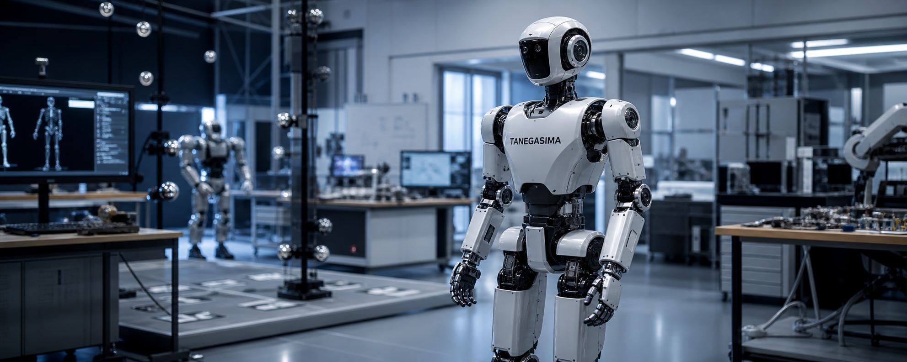

Research Humanoid Platform
HumanoidResearch
大学・研究機関・先端開発チーム向けに最適化した小型人形ロボット。アルゴリズム検証、歩行制御、自然言語インタラクション、VLM 実験まで幅広い研究テーマに対応します。
19 DOF
130cm / 35kg
Lab-ready
ROS2 Native
Edu教育・研究導入向け
OpenSDK 完全公開
Fast検証サイクル短縮
Tanegasima // Open Research Platform

Research UseLocomotion / HRI強化学習 / 自律行動
Developer StackROS2 / Python / API再現性の高い検証環境
Technical Overview
想定スペック
研究現場での扱いやすさと開発自由度を優先し、センサー・モジュール・学習フレームワークを載せ替えやすい構成を想定しています。
Body Size130 cm / 35 kg
研究室や教室で扱いやすいコンパクトなサイズ感。
Degrees of Freedom19 DOF
歩行、上肢動作、インタラクション実験に十分な自由度。
ComputeEdge AI Ready
オンボード推論や外部PC連携を前提とした構成。
SoftwareROS2 / Gazebo / Python
実機とシミュレーションを往復しやすい開発環境。
学術研究向け柔軟性
制御層、知覚層、対話層を分離しながら研究テーマごとに変更しやすい構成。
教育用途への展開
ロボティクス授業、研究発表、デモ展示にも使いやすいサイズと安全性。
シミュレーション連携
モデルベース制御や学習済みポリシーの実機転移を支援。
Use Case
大学・R&D ラボでの実験基盤

歩行、知覚、対話を一台で検証
HUMANOID RESEARCH は、歩行制御や模倣学習だけでなく、音声対話、視覚理解、マルチモーダルAIなどの実験も一つの筐体上で扱える研究プラットフォームです。
Locomotion Research
Human-Robot Interaction
Embodied AI
Education Programs
Deployment Flow
活用イメージ
Step 01研究テーマ整理
歩行、SLAM、HRI、VLM など主対象テーマと必要な周辺機器を定義。
Step 02環境セットアップ
SDK、サンプルコード、シミュレーション環境を導入し初期検証を開始。
Step 03共同開発・発表
論文実験、展示デモ、学外発表向けにカスタム開発やサポートを実施。